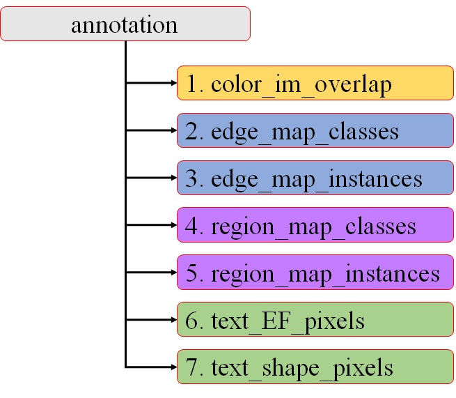
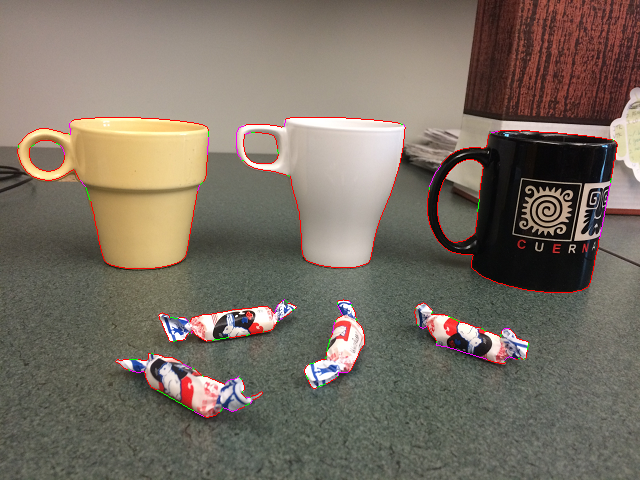
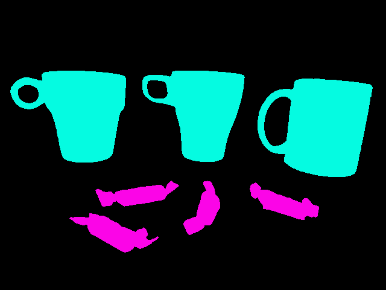
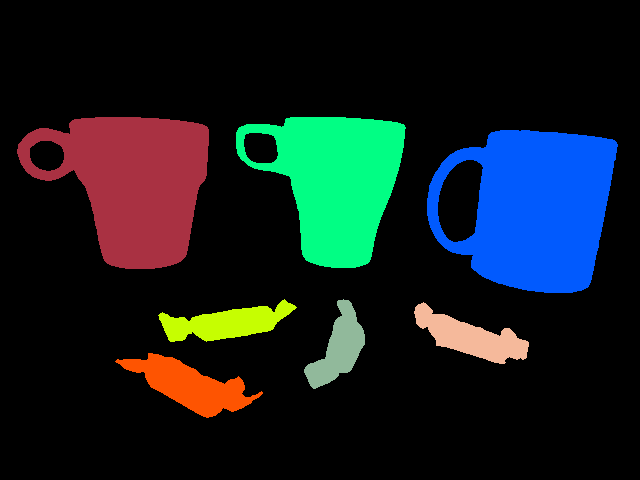

ByLabel: A Boundary Based Semi-Automatic Image Annotation Tool
Xuebin Qin, Shida He, Zichen Zhang, Masood Dehghan and Martin Jagersand
Department of Computing Science, University of Alberta, Edmonton, AB, Canada, T6G 2R3.
1. Overview
Given an image, ByLabel first detects its edge features and computes high quality boundary fragments. Current label ing tools require the human to accurately click on numerous boundary points. ByLabel simplifies this to just selecting among the boundary fragment proposals that ByLabel automatically generates.

2. INSTALLATION
Download it from:
Github
Run it by command: "./bylabel".
Currently, ByLabel can only run on 64bit Ubuntu OS.
3. TUTORIAL
3.1. Configurations
Go to the root folder ByLabel, open bylabel.cfg:
1. multi_class #Indicate the number of to-be-annotated classes
"0" binary classes annotation.
"1" multiple classes annotation.
2. source_type #Indicate the type of to-be-annotated files
"1" Images (All formats that supported by OpenCV such as JPG, PNG, BMP, TIF and MPEG).
"2" Video (All formats that supported by OpenCV such as MP4 and AVI).
3. input_path #Set the path of source images/video
If "souce_type" is "1", it should be the folder name of images, such as "./Test/images".
If "souce_type" is "2", it should be the full path and name of the video, such as "./Test/demo.avi".
4. output_path #Set the path of outputs
Such as "./Test/annotation". If the folder "annotation" does not exit, the tool will create a new folder named as "annotation".
5. simple_shape #Indicate the shape complexity of to-be-annotated objects
"0" Target objects with multiple boundaries.
"1" Target objects with single boundary.
6. start_idx #Indicate the starting index of to-be-annotated images
This is used to neglect the first "start_idx" images/frames.
3.2. Operations
Mouse and keyboard operations of ByLabel:
1. Mouse left button click
Select detected edge fragments or draw control points.
2. Mouse middle button (mouse wheel) click
Close the selected boundary.
3. Mouse wheel scroll
Zoom in/out the image.
4. "a"
Switch between "selecting" and "drawing" mode.
5. "b"
Break edge fragments at the pixel where mouse cursor is located.
6. "e"
Enable or disable showing of detected edge fragments.
7. "f"
Unselect the last selected edge fragment or segment.
8. "Esc"
Exit ByLabel.
3.3. Outputs
Annotation are outputed in following seven folders:
The folder "annotation" is assigned by users, other names are also allowed. Following seven folders are generated by ByLabel.
1. color_im_overlap
Images with annotated boundaries are outputed in this folder for after annotation checking.
2. edge_map_classes
(1) For each annotated image, there will be a corresponding class-based colorful edge map and a .txt file in this folder.
(2) In a color map, each class is assigned a unique color. The .txt file records the objects' class names and their color code as follows:
"2
cup 185 185 175
candy 165 185 115"
The number in the first line denotes the annotated classes of its' corresponding image.
(3) There is another file named as "classesColor.txt" which records those class names and their corresponding color codes as follows:
"4
cup 185 185 175
candy 165 185 115
scissors 195 185 195
bowl 205 185 195"
The number in the first line denotes the totally annotated classes in all of the images.
3. edge_map_instances
(1) For each annotated image, there will be a corresponding instance-based colorful edge map and a .txt file in this folder.
(2) In a color map, each object instance is assigned a unique color. The .txt file records those objects' class names and their corresponding color codes as follows:
"4
cup 155 185 175
cup 155 185 225
cup 155 185 115
cup 155 185 195
candy 155 185 125
candy 155 185 145
candy 155 185 135
candy 155 185 165"
The number in the first line denotes the totally annotated objects in this image.
4. region_map_classes
The outputs in this folder are similar to that in folder "edge_map_classes".
5. region_map_instances
The outputs in this folder are similar to that in folder "edge_map_instances".
6. text_ EF_pixels
For each annotated image, there will be a .txt file in this folder. Each line of a .txt file describes one edge fragment:
"n
[edge_fragment_id] [point1.x] [point1.y] [point2.x] [point2.y] ... [pointn.x] [pointn.y]
[edge_fragment_id] [point1.x] [point1.y] [point2.x] [point2.y] ... [pointn.x] [pointn.y]
......"
The "n" in the first line indicates the total number of detected edge fragments.
7. text_shape_pixels
For each annotated image, there will be a .txt file in this foler. Each line of a .txt file describes the information of a selected/drawn edge fragment:
"# [object_id] [class_name] [boundaries_number] [boundary_id] [fragments_number] [edge_fragment_id] [fragment_type] [point1.x] [point1.y] [point2.x] [point2.y] ... [pointm.x] [pointm.y]"